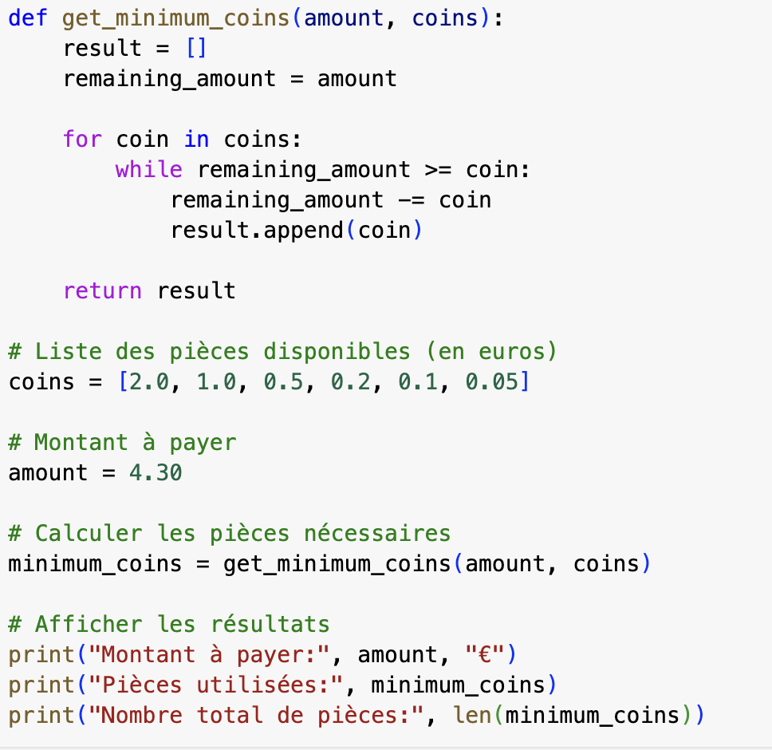

L'algorithme glouton

DÉFINITION:
Un algorithme glouton est un algorithme qui effectue à chaque instant, le meilleur choix possible sur le moment, sans retour en arrière ni anticipation des étapes suivantes, dans l'objectif d'atteindre au final un résultat optimal.
→SchoolMouv
Exemples de problèmes:
Un exemple d'utilisation au quotidien d'un algorithme glouton:
Je suis dans un café et je dois payer une boisson qui me coûte 4,30 €. Je possède un portefeuille contenant des pièces de différentes valeurs : 2 €, 1 €, 0,50 €, 0,20 €, 0,10 €, et 0,05 €. Pour minimiser le nombre de pièces que je dois donner au caissier, je peux donc utiliser un algorithme glouton.

avec l'aide de Chatgpt.